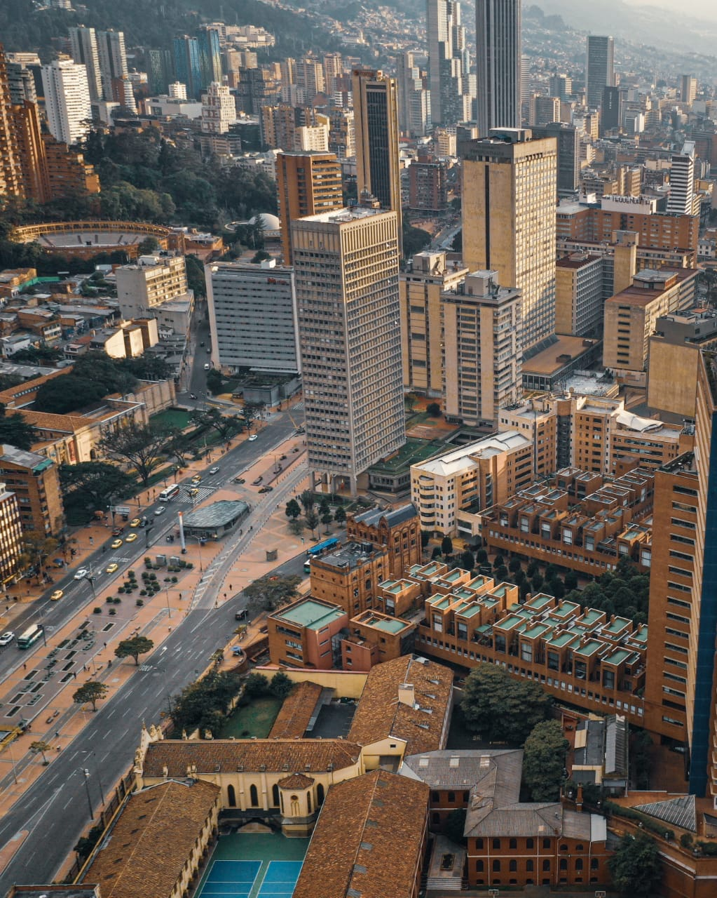

1 de 6 · ¿Cómo se mide la velocidad?
Bogotá no mide la velocidad en un punto, sino en — tramos de vía con sensores Bitcarrier, repartidos por toda la ciudad. Cada línea del mapa es uno.
Un tramo cuenta como «con cámara» si tiene una cámara a 50 m o menos: son —. Los demás tramos son el punto de comparación.
2 de 6 · ¿Y los siniestros?
Las — cámaras están en — cruces; cada cruce es un sitio. Un siniestro pertenece a un sitio si ocurrió a — m o menos de él. Se usa ese radio, y no uno menor, porque la ubicación de los siniestros de 2018 a 2021 se estimó desde la dirección, con un error típico de unos —.
La velocidad de cada sitio es el promedio de sus tramos a 50 m o menos. En el ejemplo, — usa —. Todo lo que queda fuera de los círculos es el resto de la ciudad, el control.
3 de 6 · ¿Dónde bajaron los siniestros graves?
Cada círculo es uno de los — sitios con cámara. El color compara el cambio de siniestros graves (con heridos o muertos) a — m o menos del sitio con el cambio en el resto de la ciudad. Azul verdoso: bajaron más que en el control. Naranja: subieron más.
Bajaron más que en la ciudad en — sitios y subieron más en —.
4 de 6 · ¿Bajó también la velocidad?
Los mismos sitios, ahora con el percentil 85 de la velocidad nocturna. De noche el tráfico fluye y se ve el exceso de velocidad; de día la velocidad refleja sobre todo la congestión. Los círculos vacíos no tienen sensor cerca.
Frente al resto de la ciudad, la velocidad nocturna subió — km/h o más en — de los — sitios con sensor, y bajó esa cantidad o más en —.
5 de 6 · ¿Coinciden los dos mapas?
En — de los — sitios con datos bajaron la velocidad y los siniestros a la vez. En — subieron los dos.
6 de 6 · ¿Se relacionan velocidad y siniestros?
Cada punto es un sitio. Si las cámaras redujeran los siniestros porque bajan la velocidad, los puntos caerían en la esquina inferior izquierda. Ahí quedan —, y de ellos solo en — la velocidad bajó — km/h o más frente al control (fuera de la franja gris).
Correlación: r = — con — sitios, que usan solo — combinaciones de sensores distintas, porque varios sitios comparten tramo. Es una relación —: una señal, no una prueba de causalidad.
Quedan dos preguntas: ¿pasa lo mismo a cualquier hora? y ¿cambió a quién afectan los siniestros? Explóralo en el mapa de abajo.
Explora
Cambia la capa, la franja horaria o el tipo de víctima, y haz clic en un sitio para ver su detalle.